MERIDIUS / GOBLIN RABBLE / 3D RIG / 25 OCT 2026
Goblin Rabble 3D rig
The bald goblin from the front of the rabble concept, built in Tripo with his five pieces of kit as separate models and rigged in Blender on a Mixamo-compatible skeleton. His right hand closes round a knife, a hatchet or a cleaver. A barrel or plank shield is strapped to the outside of his left forearm. Four clips play below from the game's battle camera, in all four facings: his idle, his walk and his attack with each of the three weapons, and his death. In all 378 frames, no weapon, shield, strap or handle passes through his body. He also stands in the 3D Sandbox with each loadout.
Pose viewer
Pick a clip and a facing, pause, then step frame by frame to the pose you want to comment on. Screenshot with the readout in view, so the frame is named. Keys: Space play / pause, ← → one frame, Shift + ← → five frames, Home and End first and last frame.
The bald goblin from the front of concept B. Nano Banana Pro on Higgsfield redrew him as a 4K T-pose with the rabble's face and nose and no body paint, and drew the knife, hatchet, cleaver, barrel shield and plank shield on their own.
Six separate models, Smart Mesh in quads, each textured at 4096 px from its own image. The body has 5,841 faces, the props 556–1,254. 720 Tripo credits in all.
The broken collar chain, modelled rigid and sticking out, now hangs straight down from the collar's ring. He stands 1.26 m tall, and each prop is scaled to its length in the concept.
87 bones with Mixamo names, 61 of them deforming, at most four per vertex: fingers, forearm twist bones, the collar chain and the loincloth flaps. A loadout switch picks knife and barrel, hatchet and plank, or cleaver and barrel.
The fingers are solved on the skin to close round each weapon's handle without going into it, with 0.2–0.5 mm to spare.
On the outside of the left forearm, face out, with the forearm and the fist 1–1.5 mm under the back. Two stitched leather straps riveted to the board hold each one, and on the barrel shield the fist closes round a wooden handle.
The goblin's Idle, Walk, Attack and Death from projects/meridius/Animations, retargeted onto the rig. The arms are corrected frame by frame so the props stay clear of the body. The walk and the attack play with each weapon.
From concept to Tripo
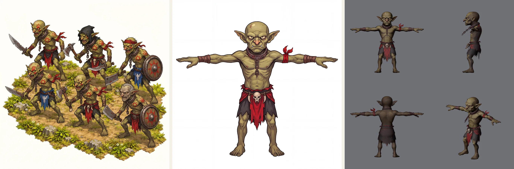
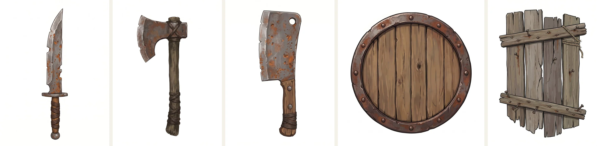
Fixed and scaled in Blender
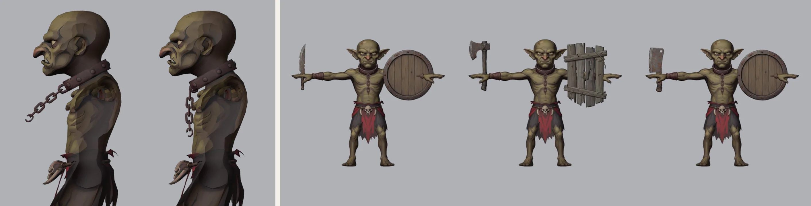
Standard pose
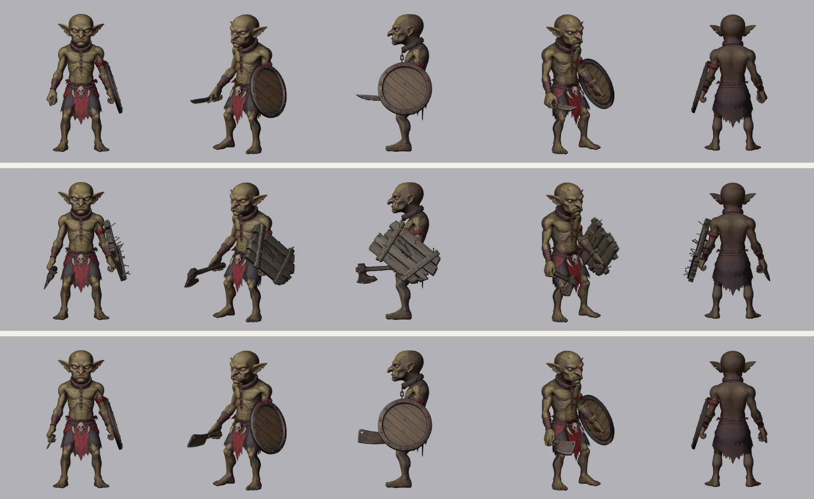
Grips
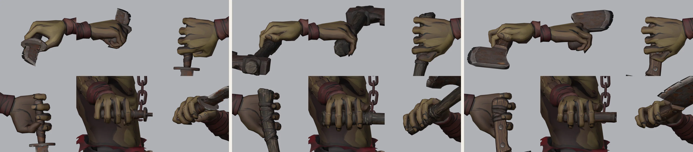
Shields, straps and handle
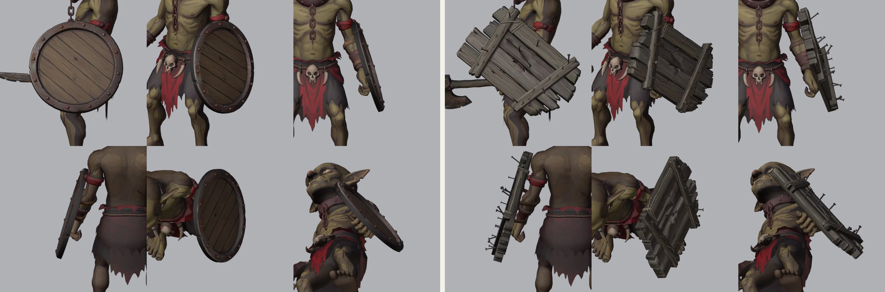
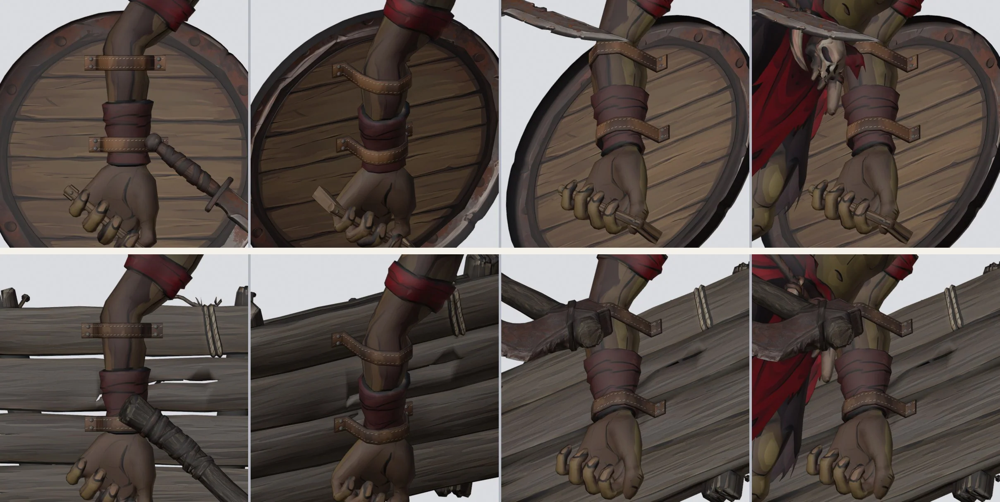
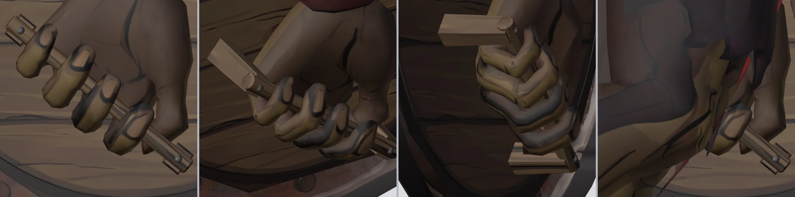
Walk
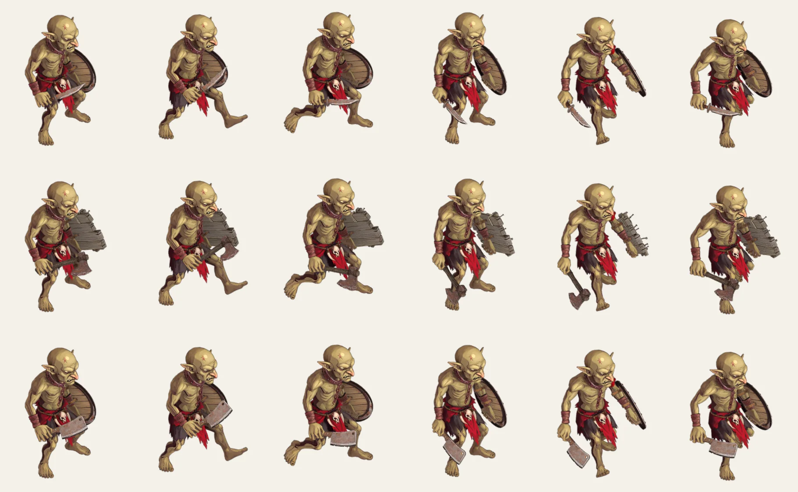
Three attacks
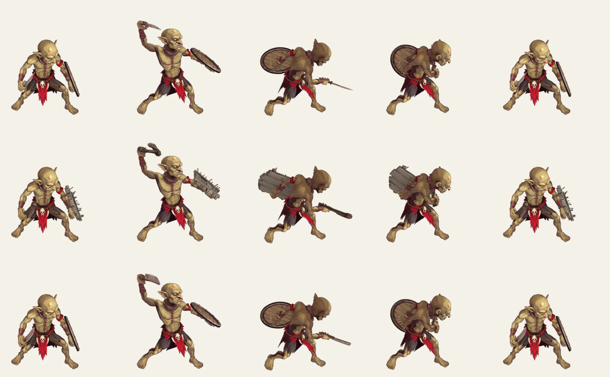
Death
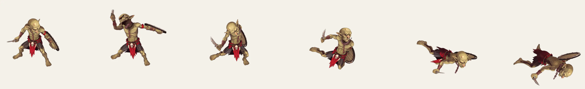
Notes
- Holding the props in motion. The clips were made for empty hands, so each frame gets the smallest arm correction that keeps the props clear. The left fist is held at its standard turn on the shield's back in every frame. Where the shield, its straps or the barrel's handle would still touch the body, the elbow opens, the arm lifts out from the chest or the forearm rolls, in that order. The most these move: in the idle the elbow opens 15°; in the walk the elbow opens 30° and the arm lifts 10°; in the attack the elbow opens 15°, the arm lifts 10° and the forearm rolls 15°; in the death the elbow opens 60° and the forearm rolls 45°. The right arm is eased toward the standard pose in the idle, where the clip's arm would put the weapon into his body, and in the second half of the walk's stride. Late in the stride, as the right arm swings back and the right leg swings forward, even the standard pose puts the weapon into the shin, so there the elbow also bends (up to 15°) and the arm lifts out from the leg (up to 30°). Each correction is spread over the neighbouring frames, so it never pops.
- Clearance. Every frame of every clip was checked with all three loadouts for body triangles that cut through a prop. Knife, hatchet, cleaver, both shields, both pairs of straps and the barrel's handle: none, in all 201 frames of the idle, 36 of the walk, 69 of the attack and 72 of the death.
- On the ground. In the death his hips are lifted wherever his body or a prop would go below the ground, by up to 34 cm, widened and averaged over neighbouring frames so the lift never pops. At their lowest, the plank shield touches the ground and the barrel shield stays 2 cm above it. In the walk his hips rise and fall by up to 2 cm, so the lowest point of his soles stays on the ground (within 5 mm): his legs are shorter than the clip's, so its feet sank at the heel strike and floated in mid-stance.
- Loop and drift. The idle stays in place and eases its last 10 frames back into the first, so it loops seamlessly. The walk is also kept in place: it covers 1.00 m a stride, 0.86 m/s, which the game adds as he moves, and its last frame meets the first exactly. The attack and the death play as they come.
- Clips used. Idle - Goblin, 201 frames (6.67 s). Walk - Goblin, 36 frames (1.17 s). Attack - Goblin Rabble, 69 frames (2.27 s). Death - Goblin, 72 frames (2.37 s). All from
projects/meridius/Animations, at 30 fps, with the hips' motion scaled by his hip height against the clips' (0.556). The Mixamo clips stay local, so the retargeted motion is saved in a separate local copy of the rig, not in the rig file. - Frames. Rendered in Blender's Workbench, flat-lit with an outline and cavity, from an orthographic camera 30° above the ground, at 254.5 px per metre in a 780 × 580 frame, then packed at 0.75 scale. The frame is that wide for the death, which throws him far to one side in some facings.
- Limits. The thumb closes against each handle but doesn't yet fold over the index finger as in a real fist; its tip stops about 6 cm short. One rivet of the cleaver presses 2.7 mm into the middle finger, hidden inside the fist. The plank shield has straps but no handle, so its fist closes empty. The barrel shield is a flat disc with its staves painted on, and the plank's nails come through at the back. The back of the body is painted darker and flatter than the front, because Tripo textures from the front image.
- Files.
projects/meridius/references/characters/blender/goblin_rabble/goblin_rabble_rig.blend(rig, props, straps, handle and grips) andgoblin_rabble_base.blend, built by the scripts in itstools/:build_rabble.py,rig_goblin_rabble.pyandpaint_straps.py, withrender_rig.pyfor the review renders and measurements. The clips are retargeted byretarget_clips.py, rendered byrender_clips.pyand packed bypack_sheets.py. The Tripo exports are inreferences/characters/tripo/goblin_rabble/, and job IDs and costs inreferences/characters/goblin_rabble/jobs.json.